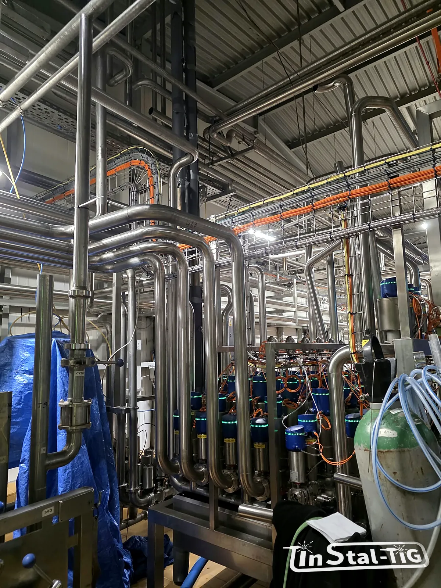

Mycie CIP: jak zaprojektować instalację, żeby dała się dobrze umyć

Mycie w obiegu zamkniętym, czyli CIP (Cleaning in Place), pozwala umyć rurociągi, zbiorniki i armaturę bez rozbierania instalacji. Jest szybkie i powtarzalne, ale tylko wtedy, gdy instalację od początku zaprojektowano z myślą o myciu. Najlepsza stacja CIP nie umyje rurociągu, w którym przepływ jest za wolny, zostaje woda albo jest martwy odcinek. Poniżej najważniejsze zasady, o których warto pamiętać już na etapie rysunku.
Cztery czynniki skutecznego mycia
Skuteczność mycia opisuje tzw. koło Sinnera: wynik zależy od czterech czynników, które się wzajemnie uzupełniają.
- Chemia: rodzaj i stężenie środka myjącego,
- temperatura roztworu,
- czas mycia,
- działanie mechaniczne: w rurach to prędkość i burzliwość przepływu, w zbiornikach siła strumienia z głowic myjących.
Chemię, temperaturę i czas ustawia się w programie stacji CIP. Działanie mechaniczne w dużej mierze wynika z tego, jak instalacja jest zbudowana. Tego nie poprawi się później samym programem.
Typowy cykl mycia
Szczegóły zależą od produktu i zaleceń dostawcy chemii, ale typowy cykl wygląda tak:
- płukanie wstępne wodą, żeby usunąć resztki produktu,
- mycie roztworem zasadowym (ługiem), który rozpuszcza tłuszcze i białka,
- płukanie pośrednie,
- mycie roztworem kwaśnym, które usuwa kamień i osady mineralne (np. kamień mleczny),
- płukanie końcowe i, jeśli trzeba, dezynfekcja.
Gorące roztwory i zmiany temperatury oznaczają, że instalacja się wydłuża i kurczy. To trzeba uwzględnić w mocowaniach rurociągów.
Prędkość przepływu: najczęściej przyjmuje się co najmniej 1,5 m/s
W rurach środek myjący musi płynąć na tyle szybko, żeby przepływ był burzliwy i zrywał osad ze ścianek. W praktyce za minimum przyjmuje się zwykle około 1,5 m/s. Poniżej orientacyjne natężenia przepływu potrzebne do jej osiągnięcia w rurach DIN 11850 szereg 2:
| Rura (Ø × ścianka) | Średnica wewnętrzna | Przepływ przy 1,5 m/s |
|---|---|---|
| 29 × 1,5 mm (DN 25) | 26 mm | ok. 2,9 m³/h |
| 41 × 1,5 mm (DN 40) | 38 mm | ok. 6,1 m³/h |
| 53 × 1,5 mm (DN 50) | 50 mm | ok. 10,6 m³/h |
| 70 × 2 mm (DN 65) | 66 mm | ok. 18,5 m³/h |
| 85 × 2 mm (DN 80) | 81 mm | ok. 27,8 m³/h |
| 104 × 2 mm (DN 100) | 100 mm | ok. 42,4 m³/h |
Wniosek jest prosty: o pompie decyduje największa rura w obiegu. Jeśli w jednej pętli są DN 25 i DN 100, to przy przepływie wystarczającym dla DN 100 w cienkiej rurze opory są ogromne, a przy przepływie dobranym do DN 25 gruba rura myje się słabo. Dlatego instalację dzieli się na obiegi mycia o zbliżonych średnicach. O tym, jak nie pomylić wymiarów rur, piszemy w artykule DIN 11850 czy ISO 1127?
Zasady projektowe, które ułatwiają mycie
- Bez martwych stref. Ślepe odejścia, nieużywane trójniki i długie króćce pod czujniki to miejsca, do których roztwór nie dopływa z odpowiednią prędkością. Odgałęzienia powinny być jak najkrótsze.
- Spadki i pełne opróżnianie. Po myciu i płukaniu w instalacji nie może zostawać woda ani roztwór. Rury prowadzi się ze spadkiem do punktów spustowych.
- Bez kieszeni powietrznych. W najwyższych punktach może zbierać się powietrze, które odcina ściankę od roztworu. Trzeba przewidzieć odpowietrzenie albo tak prowadzić trasę, żeby przepływ je wypychał.
- Gładka powierzchnia i równe spoiny od strony produktu: do gładkiej stali osad przywiera słabiej (więcej w tekście o chropowatości Ra).
- Higieniczne połączenia i uszczelki odporne na stosowaną chemię i temperaturę. Materiał uszczelek warto potwierdzić z dostawcą przy konkretnym programie mycia.
- Odpowiedni gatunek stali. Przy intensywnym myciu i środkach zawierających chlorki zwykle lepiej sprawdza się 316L niż 304 (porównanie w artykule Stal 304 czy 316L?).
Zbiorniki: głowice myjące i odbiór roztworu
Zbiorników nie myje się przepływem, tylko natryskiem. Stosuje się kule natryskowe (statyczne) albo głowice obrotowe, które dają mocniejszy strumień przy mniejszym zużyciu roztworu. Trzeba zadbać o to, żeby strumień dosięgał wszystkich powierzchni, także pod mieszadłem, króćcami i włazem.
Równie ważny jest odbiór roztworu z dna. Zbiornik powinien mieć spadek do wylotu, a wylot i rurociąg powrotny muszą odprowadzać tyle, ile podaje głowica. Inaczej na dnie zbiera się roztwór, a głowica pracuje „pod wodą”. Często potrzebna jest do tego pompa powrotna.
Warto wiedzieć: skuteczność mycia warto potwierdzać pomiarem, a nie tylko założeniami. Typowo mierzy się temperaturę i przewodność roztworu na powrocie do stacji CIP, czyli w punkcie, w którym roztwór jest już najchłodniejszy. Przewodność pozwala też rozpoznać, kiedy w rurach jest już ług, kwas, a kiedy woda.
Co ustalić przed zamówieniem instalacji?
- czy instalacja będzie myta CIP i czy stacja CIP już jest, czy dopiero powstanie,
- jaki produkt płynie w rurach i jakie osady zostawia (tłuszcz, białko, cukier, kamień),
- jakie średnice i ile obiegów mycia przewidujecie,
- jakie zbiorniki trzeba myć i czy mają już głowice myjące,
- jakie środki myjące i temperatury stosujecie.
Więcej o zasadach higienicznego projektowania piszemy w artykule Higieniczne instalacje w przemyśle spożywczym: 6 zasad dobrego projektu. Gdy masz już dane, możesz je przesłać przez formularz Wycena online.
Planujesz instalację, którą trzeba myć CIP?
Zadzwoń albo napisz. Powiedz, co płynie w rurach i jak myjecie instalację, a doradzimy układ rurociągów i przygotujemy wycenę.
Zadzwoń: 667 466 431 Napisz e-mail Wycena online